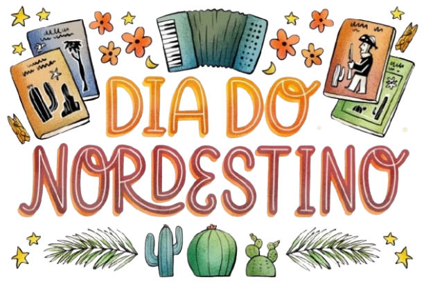

Explore o encanto do Nordeste no Dia Nacional do Nordestino. Mergulhe em suas tradições, ritmos alegres e culinária deliciosa. Este site é seu guia para celebrar e descobrir a rica herança cultural da região.

Explore o encanto do Nordeste no Dia Nacional do Nordestino. Mergulhe em suas tradições, ritmos alegres e culinária deliciosa. Este site é seu guia para celebrar e descobrir a rica herança cultural da região.
O Nordeste do Brasil é uma região rica em diversidade cultural, influenciada por tradições indígenas, africanas e europeias. Desde a época colonial, o povo nordestino enfrentou desafios como secas e desigualdades, mas sempre expressou sua cultura por meio da música, dança, culinária e artes. Festas populares, como o São João, destacam ritmos como o forró e o frevo. Além disso, o cordel representa a literatura oral, preservando as raízes e sabedoria do povo ao longo das gerações.
A cultura e identidade nordestina são marcadas por uma rica diversidade que se manifesta através da música, como o forró e o frevo, da culinária com pratos típicos como acarajé e baião de dois, e do artesanato, incluindo rendas e cerâmicas. Escritores renomados, como Jorge Amado, exploram as vivências e a realidade social da região, enquanto festas tradicionais, como o São João, promovem a união e o orgulho cultural.
O turismo no Nordeste é uma das principais fontes de receita e envolve uma diversidade de atrativos naturais, culturais e históricos. A região é famosa por suas praias paradisíacas, além de paisagens icônicas.